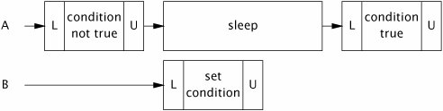

{% include JB/setup %}
{% raw %}
<div>


<a name="ch14lev1sec1" class="calibre18" id="ch14lev1sec1"></a>
<h3 id="647011-943" class="docSection1Title">14.1. Managing State Dependence</h3>
<p class="docText1">In a single-threaded program, if a state-based precondition (like "the connection pool is nonempty") does not hold when a method is called, it will never become true. Therefore, classes in sequential programs can be coded to fail when their preconditions do not hold. But in a concurrent program, state-based conditions can change through the actions of other threads: a pool that was empty a few instructions ago can become nonempty because another thread returned an element. State-dependent methods on concurrent objects can sometimes get away with failing when their preconditions are not met, but there is often a better alternative: wait for the precondition to become true.</p>
<p class="docText1">State-dependent operations that <span class="docEmphasis">block</span> until the operation can proceed are more convenient and less error-prone than those that simply fail. The built-in condition queue mechanism enables threads to block until an object has entered a state that allows progress and to wake blocked threads when they may be able to make further progress. We cover the details of condition queues in <a class="calibre2" href="ch14lev1sec2.html#ch14lev1sec2">Section 14.2</a>, but to <a name="iddle1122" class="calibre18" id="iddle1122"></a><a name="iddle1232" class="calibre18" id="iddle1232"></a><a name="iddle1244" class="calibre18" id="iddle1244"></a><a name="iddle1245" class="calibre18" id="iddle1245"></a><a name="iddle1262" class="calibre18" id="iddle1262"></a><a name="iddle1263" class="calibre18" id="iddle1263"></a><a name="iddle1987" class="calibre18" id="iddle1987"></a><a name="iddle2117" class="calibre18" id="iddle2117"></a><a name="iddle2224" class="calibre18" id="iddle2224"></a><a name="iddle2312" class="calibre18" id="iddle2312"></a><a name="iddle2313" class="calibre18" id="iddle2313"></a><a name="iddle2314" class="calibre18" id="iddle2314"></a><a name="iddle3105" class="calibre18" id="iddle3105"></a><a name="iddle3642" class="calibre18" id="iddle3642"></a><a name="iddle3643" class="calibre18" id="iddle3643"></a><a name="iddle3644" class="calibre18" id="iddle3644"></a><a name="iddle3682" class="calibre18" id="iddle3682"></a>motivate the value of an efficient condition wait mechanism, we first show how state dependence might be (painfully) tackled using polling and sleeping.</p>
<p class="docText1">A blocking state-dependent action takes the form shown in <a class="calibre2" href="#ch14list01">Listing 14.1</a>. The pattern of locking is somewhat unusual in that the lock is released and reacquired in the middle of the operation. The state variables that make up the precondition must be guarded by the object's lock, so that they can remain constant while the precondition is tested. But if the precondition does not hold, the lock must be released so another thread can modify the object stateotherwise the precondition will never become true. The lock must then be reacquired before testing the precondition again.</p>
<a name="ch14list01" class="calibre18" id="ch14list01"></a><h5 id="title-IDAIRYCX" class="docExampleTitle">Listing 14.1. Structure of Blocking State-dependent Actions.</h5><p class="calibre21"><table cellspacing="0" width="90%" border="1" cellpadding="5" class="calibre5"><tr class="calibre6"><td class="calibre28">
<pre class="calibre30">void blockingAction() throws InterruptedException {
    acquire lock on object state
    while (precondition does not hold) {
        release lock
        wait until precondition might hold
        optionally fail if interrupted or timeout expires
        reacquire lock
    }
    perform action
}
</pre><br class="calibre11"/>
</td></tr></table></p>
<p class="docText1">Bounded buffers such as <tt class="calibre25">ArrayBlockingQueue</tt> are commonly used in producer-consumer designs. A bounded buffer provides <span class="docEmphasis">put</span> and <span class="docEmphasis">take</span> operations, each of which has preconditions: you cannot take an element from an empty buffer, nor put an element into a full buffer. State dependent operations can deal with precondition failure by throwing an exception or returning an error status (making it the caller's problem), or by blocking until the object transitions to the right state.</p>
<p class="docText1">We're going to develop several implementations of a bounded buffer that take different approaches to handling precondition failure. Each extends <tt class="calibre25">BaseBoundedBuffer</tt> in <a class="calibre2" href="#ch14list02">Listing 14.2</a>, which implements a classic array-based circular buffer where the buffer state variables (<tt class="calibre25">buf</tt>, <tt class="calibre25">head</tt>, <tt class="calibre25">tail</tt>, and <tt class="calibre25">count</tt>) are guarded by the buffer's intrinsic lock. It provides synchronized <tt class="calibre25">doPut</tt> and <tt class="calibre25">doTake</tt> methods that are used by subclasses to implement the <tt class="calibre25">put</tt> and <tt class="calibre25">take</tt> operations; the underlying state is hidden from the subclasses.</p>
<a name="ch14lev2sec1" class="calibre18" id="ch14lev2sec1"></a>
<h4 id="title-IDA1SYCX" class="docSection2Title">14.1.1. Example: Propagating Precondition Failure to Callers</h4>
<p class="docText1"><tt class="calibre25">GrumpyBoundedBuffer</tt> in <a class="calibre2" href="#ch14list03">Listing 14.3</a> is a crude first attempt at implementing a bounded buffer. The <tt class="calibre25">put</tt> and <tt class="calibre25">take</tt> methods are <tt class="calibre25">synchronized</tt> to ensure exclusive access to the buffer state, since both employ check-then-act logic in accessing the buffer.</p>
<p class="docText1">While this approach is easy enough to implement, it is annoying to use. Exceptions are supposed to be for exceptional conditions [EJ Item 39]. "Buffer is <a name="iddle2081" class="calibre18" id="iddle2081"></a><a name="iddle2118" class="calibre18" id="iddle2118"></a><a name="iddle3403" class="calibre18" id="iddle3403"></a><a name="iddle3404" class="calibre18" id="iddle3404"></a>full" is not an exceptional condition for a bounded buffer any more than "red" is an exceptional condition for a traffic signal. The simplification in implementing the buffer (forcing the caller to manage the state dependence) is more than made up for by the substantial complication in using it, since now the caller must be prepared to catch exceptions and possibly retry for every buffer operation.<sup class="docFootnote"><a class="calibre2" href="#ch14fn01">[1]</a></sup> A well-structured call to <tt class="calibre25">take</tt> is shown in <a class="calibre2" href="#ch14list04">Listing 14.4</a>not very pretty, especially if <tt class="calibre25">put</tt> and <tt class="calibre25">take</tt> are called throughout the program.</p><blockquote class="calibre19"><p class="docFootnote1"><sup class="calibre27"><a name="ch14fn01" class="calibre18" id="ch14fn01">[1]</a></sup> Pushing the state dependence back to the caller also makes it nearly impossible to do things like preserve FIFO ordering; by forcing the caller to retry, you lose the information of who arrived first.</p></blockquote>
<a name="ch14list02" class="calibre18" id="ch14list02"></a><h5 id="title-IDA0VYCX" class="docExampleTitle">Listing 14.2. Base Class for Bounded Buffer Implementations.</h5><p class="calibre21"><table cellspacing="0" width="90%" border="1" cellpadding="5" class="calibre5"><tr class="calibre6"><td class="calibre28">
<pre class="calibre30">@ThreadSafe
public abstract class BaseBoundedBuffer&lt;V&gt; {
    @GuardedBy("this") private final V[] buf;
    @GuardedBy("this") private int tail;
    @GuardedBy("this") private int head;
    @GuardedBy("this") private int count;

    protected BaseBoundedBuffer(int capacity) {
        this.buf = (V[]) new Object[capacity];
    }

    protected synchronized final void doPut(V v) {
        buf[tail] = v;
        if (++tail == buf.length)
            tail = 0;
        ++count;
    }

    protected synchronized final V doTake() {
        V v = buf[head];
        buf[head] = null;
        if (++head == buf.length)
            head = 0;
        --count;
        return v;
    }

    public synchronized final boolean isFull() {
        return count == buf.length;
    }

    public synchronized final boolean isEmpty() {
        return count == 0;
    }
}
</pre><br class="calibre11"/>
</td></tr></table></p>
<a name="ch14list03" class="calibre18" id="ch14list03"></a><h5 id="title-IDALWYCX" class="docExampleTitle">Listing 14.3. Bounded Buffer that Balks When Preconditions are Not Met.</h5><p class="calibre21"><table cellspacing="0" width="90%" border="1" cellpadding="5" class="calibre5"><tr class="calibre6"><td class="calibre28">

<pre class="calibre30">@ThreadSafe
public class GrumpyBoundedBuffer&lt;V&gt; extends BaseBoundedBuffer&lt;V&gt; {
    public GrumpyBoundedBuffer(int size) { super(size); }

    public <span class="docEmphStrong">synchronized</span>  void put(V v) throws BufferFullException {
        <span class="docEmphStrong">if (isFull())</span>
<span class="docEmphStrong">throw new BufferFullException();</span>
        doPut(v);
    }

    public <span class="docEmphStrong">synchronized</span>  V take() throws BufferEmptyException {
        <span class="docEmphStrong">if (isEmpty())</span>
<span class="docEmphStrong">throw new BufferEmptyException();</span>
        return doTake();
    }
}
</pre><br class="calibre11"/>
</td></tr></table></p>
<a name="ch14list04" class="calibre18" id="ch14list04"></a><h5 id="title-IDA4XYCX" class="docExampleTitle">Listing 14.4. Client Logic for Calling <tt class="calibre33">GrumpyBoundedBuffer</tt>.</h5><p class="calibre21"><table cellspacing="0" width="90%" border="1" cellpadding="5" class="calibre5"><tr class="calibre6"><td class="calibre28">
<pre class="calibre30">while (true) {
    try {
        V item = buffer.take();
        <span class="docEmphasis">// use item</span>
        break;
    } catch (BufferEmptyException e) {
        Thread.sleep(SLEEP_GRANULARITY);
    }
}
</pre><br class="calibre11"/>
</td></tr></table></p>
<p class="docText1">A variant of this approach is to return an error value when the buffer is in the wrong state. This is a minor improvement in that it doesn't abuse the exception mechanism by throwing an exception that really means "sorry, try again", <a name="iddle1229" class="calibre18" id="iddle1229"></a><a name="iddle1230" class="calibre18" id="iddle1230"></a><a name="iddle1278" class="calibre18" id="iddle1278"></a><a name="iddle1716" class="calibre18" id="iddle1716"></a><a name="iddle2181" class="calibre18" id="iddle2181"></a><a name="iddle3602" class="calibre18" id="iddle3602"></a><a name="iddle3603" class="calibre18" id="iddle3603"></a><a name="iddle3970" class="calibre18" id="iddle3970"></a><a name="iddle4320" class="calibre18" id="iddle4320"></a><a name="iddle4321" class="calibre18" id="iddle4321"></a><a name="iddle4322" class="calibre18" id="iddle4322"></a><a name="iddle4343" class="calibre18" id="iddle4343"></a><a name="iddle5132" class="calibre18" id="iddle5132"></a>but it does not address the fundamental problem: that callers must deal with precondition failures themselves.<sup class="docFootnote"><a class="calibre2" href="#ch14fn02">[2]</a></sup></p><blockquote class="calibre19"><p class="docFootnote1"><sup class="calibre27"><a name="ch14fn02" class="calibre18" id="ch14fn02">[2]</a></sup> <tt class="calibre35">Queue</tt> offers both of these options<tt class="calibre35">poll</tt> returns <tt class="calibre35">null</tt> if the queue is empty, and <tt class="calibre35">remove</tt> throws an exceptionbut <tt class="calibre35">Queue</tt> is not intended for use in producer-consumer designs. <tt class="calibre35">BlockingQueue</tt>, whose operations block until the queue is in the right state to proceed, is a better choice when producers and consumers will execute concurrently.</p></blockquote>
<p class="docText1">The client code in <a class="calibre2" href="#ch14list04">Listing 14.4</a> is not the only way to implement the retry logic. The caller could retry the <tt class="calibre25">take</tt> immediately, without sleepingan approach known as <span class="docEmphasis">busy waiting</span> or <span class="docEmphasis">spin waiting</span>. This could consume quite a lot of CPU time if the buffer state does not change for a while. On the other hand, if the caller decides to sleep so as not to consume so much CPU time, it could easily "oversleep" if the buffer state changes shortly after the call to <tt class="calibre25">sleep</tt>. So the client code is left with the choice between the poor CPU usage of spinning and the poor responsiveness of sleeping. (Somewhere between busy waiting and sleeping would be calling <tt class="calibre25">Thread.yield</tt> in each iteration, which is a hint to the scheduler that this would be a reasonable time to let another thread run. If you are waiting for another thread to do something, that something might happen faster if you yield the processor rather than consuming your full scheduling quantum.)</p>
<a name="ch14lev2sec2" class="calibre18" id="ch14lev2sec2"></a>
<h4 id="title-IDAG4YCX" class="docSection2Title">14.1.2. Example: Crude Blocking by Polling and Sleeping</h4>
<p class="docText1"><tt class="calibre25">SleepyBoundedBuffer</tt> in <a class="calibre2" href="#ch14list05">Listing 14.5</a> attempts to spare callers the inconvenience of implementing the retry logic on each call by encapsulating the same crude "poll and sleep" retry mechanism within the <tt class="calibre25">put</tt> and <tt class="calibre25">take</tt> operations. If the buffer is empty, <tt class="calibre25">take</tt> sleeps until another thread puts some data into the buffer; if the buffer is full, <tt class="calibre25">put</tt> sleeps until another thread makes room by removing some data. This approach encapsulates precondition management and simplifies using the bufferdefinitely a step in the right direction.</p>
<p class="docText1">The implementation of <tt class="calibre25">SleepyBoundedBuffer</tt> is more complicated than the previous attempt.<sup class="docFootnote"><a class="calibre2" href="#ch14fn03">[3]</a></sup> The buffer code must test the appropriate state condition with the buffer lock held, because the variables that represent the state condition are guarded by the buffer lock. If the test fails, the executing thread sleeps for a while, first releasing the lock so other threads can access the buffer.<sup class="docFootnote"><a class="calibre2" href="#ch14fn04">[4]</a></sup> Once the thread wakes up, it reacquires the lock and tries again, alternating between sleeping and testing the state condition until the operation can proceed.</p><blockquote class="calibre19"><p class="docFootnote1"><sup class="calibre27"><a name="ch14fn03" class="calibre18" id="ch14fn03">[3]</a></sup> We will spare you the details of Snow White's other five bounded buffer implementations, especially <tt class="calibre35">SneezyBoundedBuffer</tt>.</p></blockquote><blockquote class="calibre19"><p class="docFootnote1"><sup class="calibre27"><a name="ch14fn04" class="calibre18" id="ch14fn04">[4]</a></sup> It is usually a bad idea for a thread to go to sleep or otherwise block with a lock held, but in this case is even worse because the desired condition (buffer is full/empty) can never become true if the lock is not released!</p></blockquote>
<p class="docText1">From the perspective of the caller, this works nicelyif the operation can proceed immediately, it does, and otherwise it blocksand the caller need not deal with the mechanics of failure and retry. Choosing the sleep granularity is a tradeoff between responsiveness and CPU usage; the smaller the sleep granularity, the more responsive, but also the more CPU resources consumed. <a class="calibre2" href="#ch14fig01">Figure 14.1</a> shows how sleep granularity can affect responsiveness: there may be a delay between when buffer space becomes available and when the thread wakes up and checks again.</p>
<a name="ch14fig01" class="calibre18" id="ch14fig01"></a><p class="calibre21"><div class="calibre12">
<h5 class="docExampleTitle">Figure 14.1. Thread Oversleeping Because the Condition Became True Just After It Went to Sleep.</h5>
</div></p><p class="docText1">
</p>
<p class="calibre1"> </p>
<p class="docText1"></p><a name="ch14list05" class="calibre18" id="ch14list05"></a><h5 id="title-IDA3IZCX" class="docExampleTitle">Listing 14.5. Bounded Buffer Using Crude Blocking.</h5><p class="calibre21"><table cellspacing="0" width="90%" border="1" cellpadding="5" class="calibre5"><tr class="calibre6"><td class="calibre28">

<pre class="calibre30">@ThreadSafe
public class SleepyBoundedBuffer&lt;V&gt; extends BaseBoundedBuffer&lt;V&gt; {
    public SleepyBoundedBuffer(int size) { super(size); }

    public void put(V v) throws InterruptedException {
        while (true) {
            synchronized (this) {
                if (<span class="docEmphStrong">!isFull()</span>) {
                    doPut(v);
                    return;
                }
            }
            <span class="docEmphStrong">Thread.sleep</span>(SLEEP_GRANULARITY);
        }
    }

    public V take() throws InterruptedException {
        while (true) {
            synchronized (this) {
                if (<span class="docEmphStrong">!isEmpty()</span>)
                    return doTake();
            }
            <span class="docEmphStrong">Thread.sleep</span>(SLEEP_GRANULARITY);
        }
    }
}
</pre><br class="calibre11"/>
</td></tr></table></p>
<p class="docText1"><a name="iddle1231" class="calibre18" id="iddle1231"></a><a name="iddle15051" class="calibre18" id="iddle15051"></a><a name="iddle1505" class="calibre18" id="iddle1505"></a><a name="iddle1879" class="calibre18" id="iddle1879"></a><a name="iddle2182" class="calibre18" id="iddle2182"></a><a name="iddle3758" class="calibre18" id="iddle3758"></a><a name="iddle4392" class="calibre18" id="iddle4392"></a><tt class="calibre25">SleepyBoundedBuffer</tt> also creates another requirement for the callerdealing with <tt class="calibre25">InterruptedException</tt>. When a method blocks waiting for a condition to become true, the polite thing to do is to provide a cancellation mechanism (see <a class="calibre2" href="ch07.html#ch07">Chapter 7</a>). Like most well-behaved blocking library methods, <tt class="calibre25">SleepyBounded-Buffer</tt> supports cancellation through interruption, returning early and throwing <tt class="calibre25">InterruptedException</tt> if interrupted.</p>
<p class="docText1">These attempts to synthesize a blocking operation from polling and sleeping were fairly painful. It would be nice to have a way of suspending a thread but ensuring that it is awakened promptly when a certain condition (such as the buffer being no longer full) becomes true. This is exactly what <span class="docEmphasis">condition queues</span> do.</p>
<a name="ch14lev2sec3" class="calibre18" id="ch14lev2sec3"></a>
<h4 id="title-IDAMNZCX" class="docSection2Title">14.1.3. Condition Queues to the Rescue</h4>
<p class="docText1">Condition queues are like the "toast is ready" bell on your toaster. If you are listening for it, you are notified promptly when your toast is ready and can drop what you are doing (or not, maybe you want to finish the newspaper first) and <a name="iddle1267" class="calibre18" id="iddle1267"></a><a name="iddle1371" class="calibre18" id="iddle1371"></a><a name="iddle1372" class="calibre18" id="iddle1372"></a><a name="iddle1373" class="calibre18" id="iddle1373"></a><a name="iddle1503" class="calibre18" id="iddle1503"></a><a name="iddle1507" class="calibre18" id="iddle1507"></a><a name="iddle1581" class="calibre18" id="iddle1581"></a><a name="iddle1613" class="calibre18" id="iddle1613"></a><a name="iddle1711" class="calibre18" id="iddle1711"></a><a name="iddle1887" class="calibre18" id="iddle1887"></a><a name="iddle1888" class="calibre18" id="iddle1888"></a><a name="iddle1889" class="calibre18" id="iddle1889"></a><a name="iddle2087" class="calibre18" id="iddle2087"></a><a name="iddle2326" class="calibre18" id="iddle2326"></a><a name="iddle2327" class="calibre18" id="iddle2327"></a><a name="iddle2623" class="calibre18" id="iddle2623"></a><a name="iddle2824" class="calibre18" id="iddle2824"></a><a name="iddle2835" class="calibre18" id="iddle2835"></a><a name="iddle3001" class="calibre18" id="iddle3001"></a><a name="iddle3111" class="calibre18" id="iddle3111"></a><a name="iddle3396" class="calibre18" id="iddle3396"></a><a name="iddle3757" class="calibre18" id="iddle3757"></a><a name="iddle3759" class="calibre18" id="iddle3759"></a><a name="iddle3950" class="calibre18" id="iddle3950"></a><a name="iddle4212" class="calibre18" id="iddle4212"></a><a name="iddle4964" class="calibre18" id="iddle4964"></a><a name="iddle5140" class="calibre18" id="iddle5140"></a>get your toast. If you are not listening for it (perhaps you went outside to get the newspaper), you could miss the notification, but on return to the kitchen you can observe the state of the toaster and either retrieve the toast if it is finished or start listening for the bell again if it is not.</p>
<p class="docText1">A <span class="docEmphasis">condition queue</span> gets its name because it gives a group of threadscalled the <span class="docEmphasis">wait set</span>a way to wait for a specific condition to become true. Unlike typical queues in which the elements are data items, the elements of a condition queue are the threads waiting for the condition.</p>
<p class="docText1">Just as each Java object can act as a lock, each object can also act as a condition queue, and the <tt class="calibre25">wait</tt>, <tt class="calibre25">notify</tt>, and <tt class="calibre25">notifyAll</tt> methods in <tt class="calibre25">Object</tt> constitute the API for intrinsic condition queues. An object's intrinsic lock and its intrinsic condition queue are related: in order to call any of the condition queue methods on object <span class="docEmphasis">X</span>, you must hold the lock on <span class="docEmphasis">X</span>. This is because the mechanism for waiting for state-based conditions is necessarily tightly bound to the mechanism for preserving state consistency: you cannot wait for a condition unless you can examine the state, and you cannot release another thread from a condition wait unless you can modify the state.</p>
<p class="docText1"><tt class="calibre25">Object.wait</tt> atomically releases the lock and asks the OS to suspend the current thread, allowing other threads to acquire the lock and therefore modify the object state. Upon waking, it reacquires the lock before returning. Intuitively, calling <tt class="calibre25">wait</tt> means "I want to go to sleep, but wake me when something interesting happens", and calling the notification methods means "something interesting happened".</p>
<p class="docText1"><tt class="calibre25">BoundedBuffer</tt> in <a class="calibre2" href="#ch14list06">Listing 14.6</a> implements a bounded buffer using <tt class="calibre25">wait</tt> and <tt class="calibre25">notifyAll</tt>. This is simpler than the sleeping version, and is both more efficient (waking up less frequently if the buffer state does not change) and more responsive (waking up promptly when an interesting state change happens). This is a big improvement, but note that the introduction of condition queues didn't change the semantics compared to the sleeping version. It is simply an optimization in several dimensions: CPU efficiency, context-switch overhead, and responsiveness. Condition queues don't let you do anything you can't do with sleeping and polling<sup class="docFootnote"><a class="calibre2" href="#ch14fn05">[5]</a></sup>, but they make it a lot easier and more efficient to express and manage state dependence.</p><blockquote class="calibre19"><p class="docFootnote1"><sup class="calibre27"><a name="ch14fn05" class="calibre18" id="ch14fn05">[5]</a></sup> This is notquite true; a <span class="docEmphasis">fair</span> condition queue can guarantee the relative order in which threads are released from the wait set. Intrinsic condition queues, like intrinsic locks, do not offer fair queueing; explicit <tt class="calibre35">Condition</tt>s offer a choice of fair or nonfair queueing.</p></blockquote>
<p class="docText1"></p><a name="ch14list06" class="calibre18" id="ch14list06"></a><h5 id="title-IDATL1BX" class="docExampleTitle">Listing 14.6. Bounded Buffer Using Condition Queues.</h5><p class="calibre21"><table cellspacing="0" width="90%" border="1" cellpadding="5" class="calibre5"><tr class="calibre6"><td class="calibre28">
<pre class="calibre30">@ThreadSafe
public class BoundedBuffer&lt;V&gt; extends BaseBoundedBuffer&lt;V&gt; {
    <span class="docEmphasis">// CONDITION PREDICATE: not-full (!isFull())</span>
<span class="docEmphasis">// CONDITION PREDICATE: not-empty (!isEmpty())</span>

    public BoundedBuffer(int size) { super(size); }

    <span class="docEmphasis">// BLOCKS-UNTIL: not-full</span>
    public  <span class="docEmphStrong">synchronized</span>  void put(V v) throws InterruptedException {
        <span class="docEmphStrong">while (isFull())</span>
<span class="docEmphStrong">wait();</span>
        doPut(v);
        <span class="docEmphStrong">notifyAll();</span>
    }

    <span class="docEmphasis">// BLOCKS-UNTIL: not-empty</span>
    public  <span class="docEmphStrong">synchronized</span>  V take() throws InterruptedException {
        <span class="docEmphStrong">while (isEmpty())</span>
<span class="docEmphStrong">wait();</span>
        V v = doTake();
        <span class="docEmphStrong">notifyAll();</span>
        return v;
    }
}
</pre><br class="calibre11"/>
</td></tr></table></p>
<p class="docText1"><a name="iddle1509" class="calibre18" id="iddle1509"></a><a name="iddle2088" class="calibre18" id="iddle2088"></a><a name="iddle3330" class="calibre18" id="iddle3330"></a><a name="iddle3772" class="calibre18" id="iddle3772"></a><tt class="calibre25">BoundedBuffer</tt> is finally good enough to useit is easy to use and manages state dependence sensibly.<sup class="docFootnote"><a class="calibre2" href="#ch14fn06">[6]</a></sup> A production version should also include timed versions of <tt class="calibre25">put</tt> and <tt class="calibre25">take</tt>, so that blocking operations can time out if they cannot complete within a time budget. The timed version of <tt class="calibre25">Object.wait</tt> makes this easy to implement.</p><blockquote class="calibre19"><p class="docFootnote1"><sup class="calibre27"><a name="ch14fn06" class="calibre18" id="ch14fn06">[6]</a></sup> <tt class="calibre35">ConditionBoundedBuffer</tt> in <a class="calibre2" href="ch14lev1sec3.html#ch14lev1sec3">Section 14.3</a> is even better: it is more efficient because it can use single notification instead of <tt class="calibre35">notifyAll</tt>.</p></blockquote>

<p class="calibre1"> </p>

</div>

{% endraw %}

